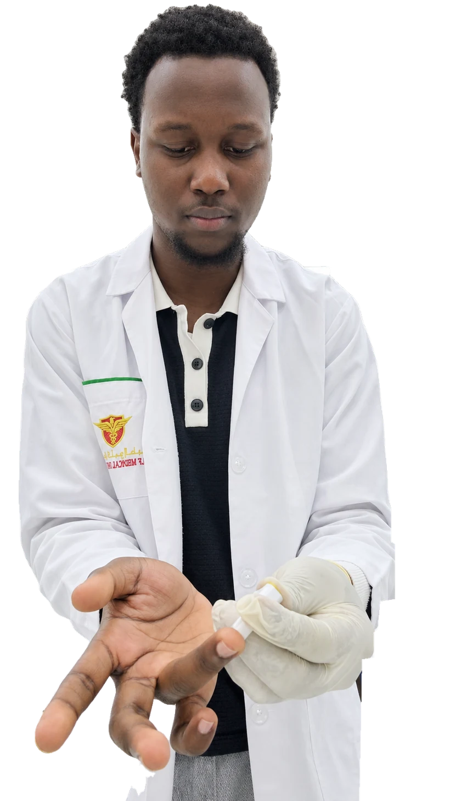
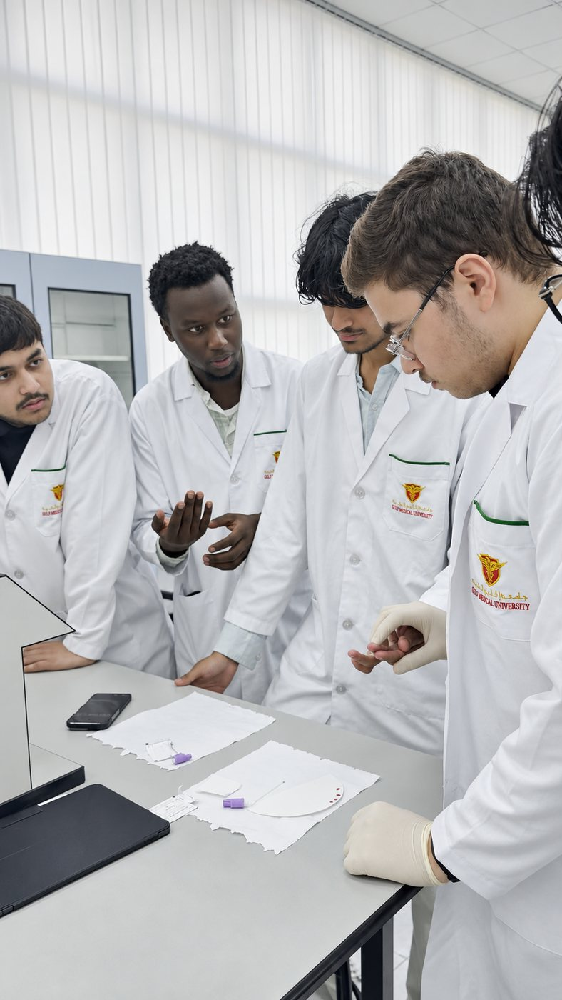
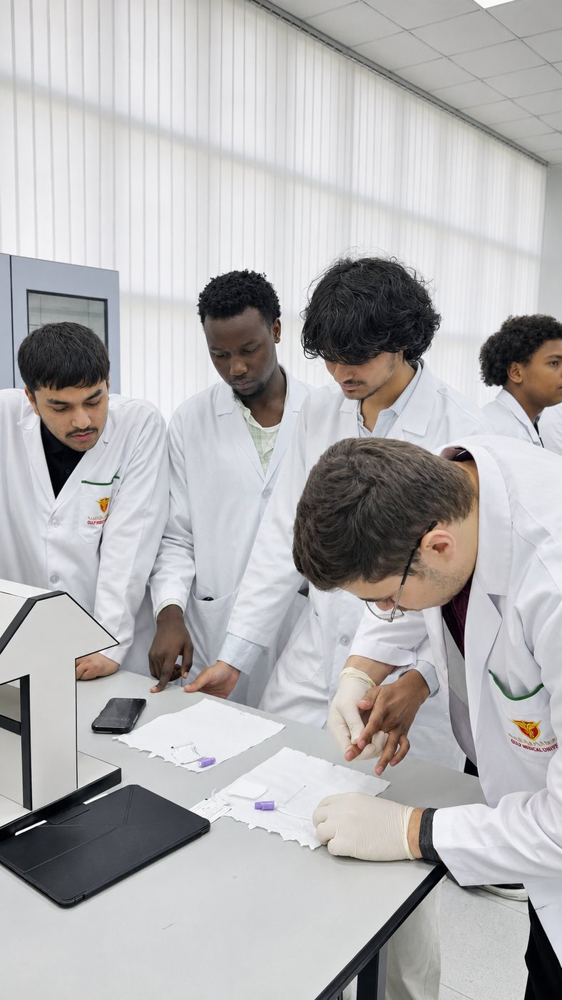
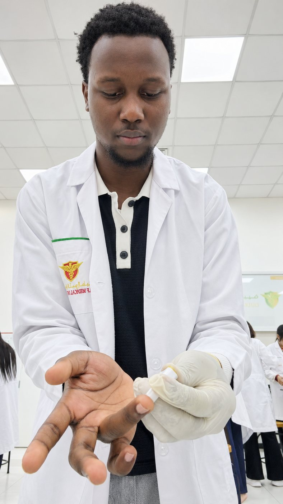

A first-semester medical student learning medicine where theory meets the bench: one supervised procedure at a time, with an honest reflection on each, on the way to becoming a confident, accurate and competent doctor.
Move through the field: the cells clump together, like a positive agglutination reaction.

Blood groupingPerformed under supervision
GMU ClinicPatient procedure observed
Medical Expert Blood Grouping Patient Safety Compatibility Organ Donation Precision Reflective Practice Gulf Medical University Medical Expert Blood Grouping Patient Safety Compatibility Organ Donation Precision Reflective Practice Gulf Medical University
01 / Profile
I'm learning medicine where theory

meets the bench

, one supervised procedure

at a time.
I'm Akol Madol Atak Kuot, a medical student in my first semester at Gulf Medical University in Ajman, United Arab Emirates.
My first months of medical school have been spent in the physiology laboratory and the university clinic as much as in lectures. I've performed blood grouping and blood typing under supervision, found my own blood group, and watched a nurse practitioner carry out the same procedure with a real patient.
I also attended the HAYAT organ donation conference on campus. Connecting the two events changed how I see medicine: a drop of blood on a typing card and a heart transplant follow the same principle, compatibility.
Those sessions taught me that I learn best when I can apply a concept with my own hands, and that the nerves that come with an unfamiliar procedure are part of learning it. I prepare carefully, ask for feedback, and reflect on every new skill so the next attempt is more precise than the last.
My long-term goal is to become a doctor who applies biomedical knowledge to real patients with confidence, accuracy and care.
Theory and practice, weighed equally
Knowledge from lectures only becomes understanding once it has been applied at the bench under supervision.
Precision protects patients
Accurate blood grouping is what keeps transfusions safe. Careful technique is a form of patient care.
Courage to learn
Feeling nervous before an unfamiliar procedure is normal. I let it sharpen my attention instead of holding me back.
02 / Training record
Laboratory & clinical experience
Hands-on sessions and programmes from my first semester at Gulf Medical University, most recent first.
Physiology LaboratoryGMU ClinicHAYAT Program
October 2026 · Week 2
Clinical observation with a patient
GMU Clinic
Followed the laboratory session into the university clinic to watch a nurse practitioner perform the procedure first-hand with a patient, connecting bench technique to real patient care.
Clinical observationPatient safety
October 2026 · Week 2
Blood grouping & blood typing practical
Physiology Laboratory, GMU
Personally performed blood grouping and typing alongside my peers, guided by my supervisor and lab assistant, and determined my own blood group and type.
Learned how heart transplants have saved lives in the UAE, how death is formally confirmed before deceased donation, and why registration and families matter. Awarded a Certificate of Participation.
Autumn 2026. Began my first semester as a medical student at Gulf Medical University, Ajman.
03 / Competency · Medical Expert
Personal Reflection
Blood Grouping, Blood Typing and the HAYAT Organ Donation Conference
Autumn 20264 min readPhysiology Lab, GMU Clinic & Lecture Hall 1
Medical Expert
Medical Expert
Why this competency?
During Blood grouping and blood typing, Physiology practicals, I was given the opportunity to discover my own blood type by the professor with the help of their supervision and guidance. This activity helped me to gain confidence and apply theory into practice, making it feel like an expert driven role. Apart from that, it deepened my understanding in how blood types are important in medical emergencies, especially in the “HAYAT-ORGAN” conference.
Evidence
How does this evidence support my reflection?
The evidence photographs illustrate the Lab activities that I did during the session and the contributions I made. The reflection mainly explains how interactive and engaging the activities were, promoting teamwork and proper communication. See the evidence photographs
I participated in many activities this semester but the Blood typing and HAYAT conference changed how I viewed the transfusion and storage of blood for use. The blood grouping and typing activity was done under supervision. It was about the ABO and Rh factors where we were told to find out our own blood types in the physiology lab. The Hayat conference was conducted by an outside party that came to campus to promote awareness and educate individuals about the importance of organ donations in medicine. The reason as to why I am choosing both events is because they started to click and make sense when I connected them. One is minimalistic and the other is complex but nevertheless, both obey and follow a single principle: “Compatibility”.
One is minimalistic and the other is complex but nevertheless, both obey and follow a single principle: Compatibility.
Akol Madol Atak Kuot
During the second week of October, in my first semester at Gulf Medical University, I participated in a blood-grouping and typing (ABO) practice in the physiology laboratory. Working alongside my classmates, I performed the procedure under the guidance of my supervisor and lab assistant. This gave me an opportunity to connect what I had learned about blood groups in lectures with practical laboratory work.
I later visited the GMU clinic, where I observed a nurse practitioner perform the procedure on a patient. Experiencing both settings helped me understand how laboratory investigations relate to patient care.
Initially, I was in a state of turmoil, excited and nervous at the same time. I was going to have the opportunity to perform an actual laboratory procedure rather than simply learning about it from lectures and at the same time, I did not know how to handle and properly use some medical instruments needed for this procedure. I lacked the familiarity and right etiquette to wear gloves and use the lancet. Nevertheless, these mixed feelings did not stop me from becoming more attentive and actively being involved in the learning process.
One of the most positive aspects of the experience was being able to perform blood grouping myself under supervision. I was given the opportunity to find my own blood type by the supervisor, making the learning more engaging and helped me to appreciate the practical application of medical knowledge. However, I don’t like needles and in this procedure, I had to use the lancet. And it wasn’t that bad to be honest, I exaggerated the harm needles cause. My takeaway from this is that theoretical knowledge alone is not enough or sufficient without practical experience. Both should be weighed equally as they are important drivers for nuanced understanding of concepts, especially in the medical field.
Talking through the blood typing card with my lab group in the Physiology Laboratory.
Throughout these sessions, I was able to develop a better understanding of blood groups and their clinical importance. I began to appreciate why accurate blood grouping is essential in medical practice, especially when it comes to blood transfusions and patient safety. This experience helped me to learn how to use and properly handle laboratory equipment, therefore demonstrating how medical experts must be able to be precise when working and also being able to apply theory or biomedical knowledge with practical applications rather than relying solely on memorization. Overall, participating in Hayat conference and blood grouping laboratory sessions was a valuable learning experience. It strengthened my understanding of blood groups, increased my appreciation of laboratory investigations and helped me identify practical skills that require further development. I also learned that feeling nervous when encountering unfamiliar procedures is a normal part of the learning process.
Theoretical knowledge alone is not enough or sufficient without practical experience.
Akol Madol Atak Kuot
I intend to prepare structurally before laboratory sessions by revising the scientific principles behind each procedure and also seek opportunities to improve my familiarity with laboratory equipment through supervision and request feedback from my instructors. My goal is to become more confident and competent in applying theoretical knowledge to practical situations through medical school.
Akol
Akol Madol Atak KuotMedical Student, Gulf Medical University
04 / Interactive typing bench
Run the test I learned
Blood grouping works by adding antisera to a drop of blood and watching for clumping, called agglutination. Choose a sample, add each reagent, and read its group the way I read my own in the Physiology Laboratory.
Step 1 · Choose a sample
Step 2 · Add the antisera
Select each well on the card to add its reagent. Clumping means the matching antigen is on the red cells.
Agglutination · antigen present (positive)
Smooth suspension · antigen absent (negative)
Blood grouping cardSample 01
?
Waiting for all three reagents
Add Anti-A, Anti-B and Anti-D to read the group.
Interactive teaching model for this portfolio. Not a diagnostic tool.
05 / Competencies
Skills I'm building
Each skill is marked by how I have met it so far: performed myself under supervision, observed in clinic, or still developing.
Skills log
Practised so far
Blood grouping & typingDetermined blood group and type, including my ownPerformed
Finger-prick sampling with a lancetCapillary blood for the typing cardPerformed
Procedure with a patientWatched a nurse practitioner at the GMU ClinicObserved
Gloving & instrument handlingBuilding familiarity through supervised practiceDeveloping
Clinical relevance of lab resultsTransfusion safety and why accuracy mattersDeveloping
Reflective practiceStructured reflection after each new procedurePerformed
Development plan
Building next
Prepare before every labRevise the scientific principles behind each procedure in advance.
More supervised practiceBuild familiarity with laboratory equipment through repetition.
Ask for feedbackRequest specific feedback from instructors after each session.
Confidence, accuracy, competenceApply biomedical knowledge to practical situations throughout medical school.
06 / Gallery
Slides from the lab & the clinic
Five moments from the blood grouping sessions. Drag or use the arrows to move through the slides, and select one to view it full size.
01 / 05
07 / HAYAT conference & certificate
The HAYAT organ donation conference
Supporting evidence for my HAYAT certificate: what I learned at the organ donation conference in Lecture Hall 1 at Gulf Medical University.
I attended a conference on the Hayat organ donation programme in Lecture Hall 1 at Gulf Medical University. The speakers discussed how heart transplants have saved lives in the UAE and what makes organ donation possible. One of my main takeaways was that deceased organ donation can be considered after death is formally confirmed. I learned about two ways death can be determined: brain death, when all brain function has permanently ceased, and circulatory death, when blood circulation has permanently stopped. I also learned that people can register their wish to donate during their lifetime and that families play an important role in donation decisions.
Two ways death can be determined
Brain death
All brain function has permanently ceased.
Circulatory death
Blood circulation has permanently stopped.
Heart transplants have saved lives in the UAE.
Deceased organ donation can be considered after death is formally confirmed.
People can register their wish to donate during their lifetime.
Families play an important role in donation decisions.
Certificate
Certificate of Participation, HAYAT Program
Awarded by
Gulf Medical University
Signed by
Prof. Manda Venkatramana, Chancellor
Venue
Lecture Hall 1, Gulf Medical University
Year
2026
Blood groupingABO and Rh compatibility, read on a typing card in the Physiology Lab